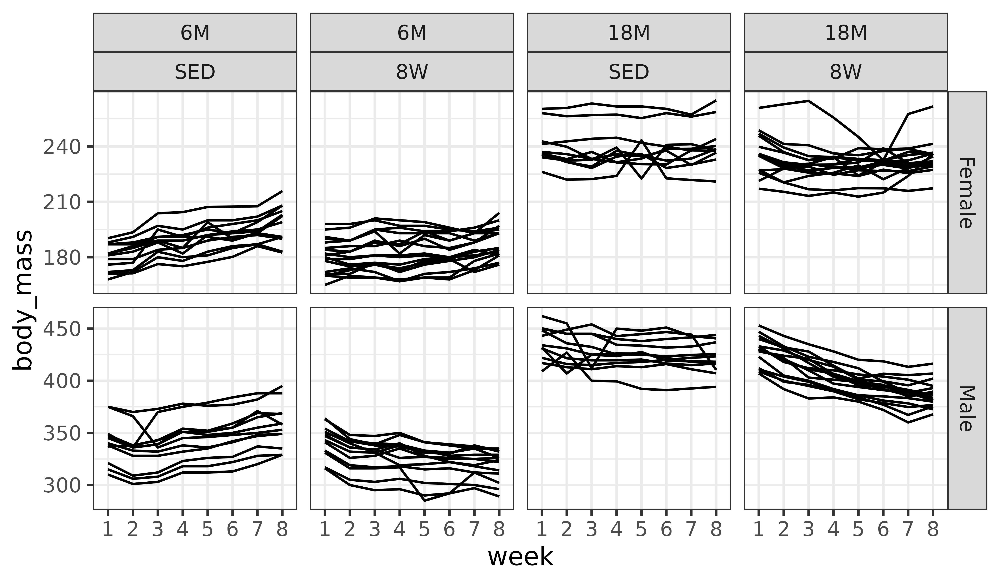
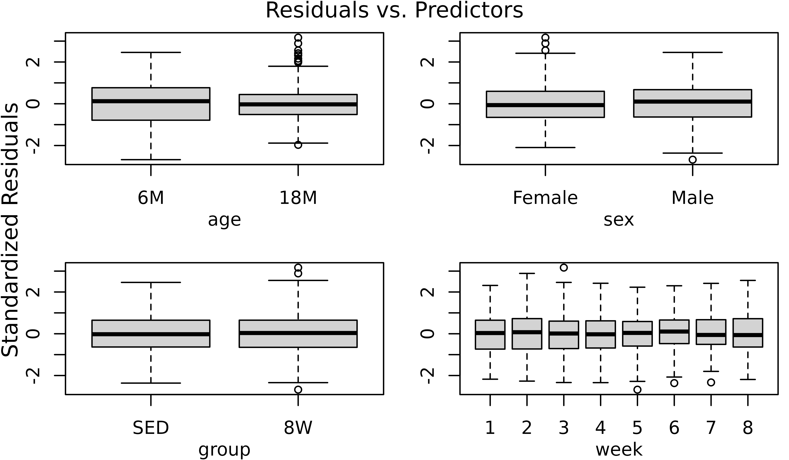
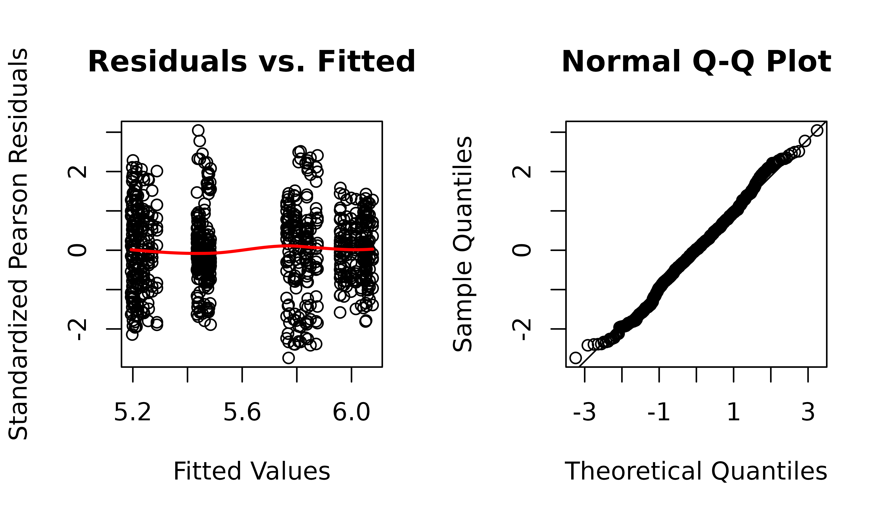
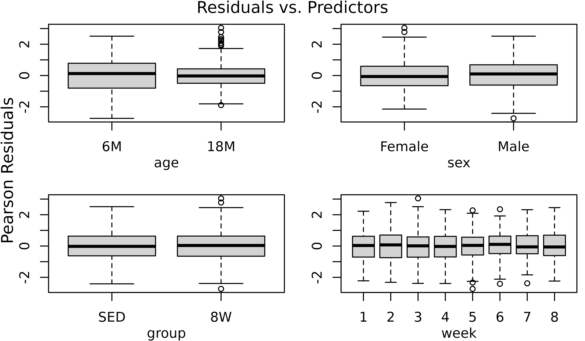
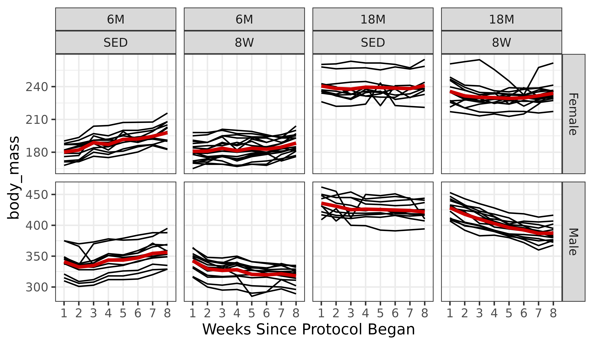

vignettes/WEEKLY_BODY_MASS_STATS.Rmd
WEEKLY_BODY_MASS_STATS.Rmd
# Required packages
library(MotrpacRatTrainingPhysiologyData)
library(dplyr)
library(purrr)
library(tidyr)
library(tibble)
library(ggplot2)
library(nlme)
library(emmeans)
library(latex2exp)
theme_set(theme_bw()) # base plot theme
# Function to plot gls and nlme results
plot_lme <- function(model) {
standard_resid <- resid(model, type = "pearson", scaled=TRUE)
layout(matrix(1:2, nrow = 1))
# Residuals vs. fitted with loess curve
plot(standard_resid ~ fitted(model),
xlab = "Fitted Values", ylab = "Standardized Pearson Residuals",
main = "Residuals vs. Fitted")
lines(loess.smooth(x = fitted(model),
y = standard_resid, degree = 2),
col = "red", lwd = 2)
## Q-Q plot
qqnorm(standard_resid); qqline(standard_resid)
layout(matrix(1))
}For each rat in the SED, 1W, 4W, and 8W groups, body mass (g) was measured at the start of weeks 1 through 7. That is, the measurement at week 1 was before the training protocol began, and the measurement at week 2 was after rats had been placed on the treadmills at a speed of 0 m/min for 15 min/day for 5 consecutive days (SED) or at a speed and duration determined by the training protocol for 5 consecutive days (1W, 2W, 4W, 8W). Therefore, we can reasonably assume that factors other than whether the rats received the training intervention were the same from week to week. This allows us to compare 8W-trained to SED animals at each week, which are the only two groups that we will focus on in this vignette.
Since we are dealing with longitudinal data (each rat has a total of
8 measurements taken across time), we need to account for the lack of
independence in the residuals for each rat. It is reasonable to assume
that the body mass of a rat at any given week is influenced by the mass
of the same rat at the previous week. That is, we do not expect a rat to
weigh 400 grams if it only weighed 300 grams the previous week.
Moreover, the body mass of any given rat does not influence the mass of
another rat. This correlation structure corresponds to an
auto-regressive process of order 1 (AR1) for each rat. We will use the
nlme::gls function to fit a generalized least squares (GLS)
model with this correlation structure.
Note: While we create plots for weekly measures of blood lactate in the “Plots of weekly total body mass and blood lactate” article, we do not perform any statistical analyses of lactate.
We will begin by modifying the data. Since we are only analyzing the
body mass data, we will remove any rows with missing body masses. Also,
since measures were made prior to the start of the week, we will
subtract 1 from week to convert it to the number of weeks since the
protocol began. For me, at least, this is easier to understand. This
shift will only affect the week labels in the plots. We also create a
categorical version of week (fweek) to be used in the GLS
model formula, while the numeric version (week) is used to
specify the correlation structure, since we need to preserve the order
in the longitudinal data (this is lost in the categorical version of
week).
df <- WEEKLY_MEASURES %>%
filter(group %in% c("SED", "8W"), !is.na(body_mass)) %>%
droplevels.data.frame() %>%
mutate(week = factor(week, levels = 1:8))
print.data.frame(head(df))
#> pid iowa_id omics_analysis sex group age day week week_time body_mass
#> 1 10043527 06F8T1 TRUE Female SED 6M 1 1 start 181
#> 2 10043799 06F8T3 FALSE Female SED 6M 1 1 start 182
#> 3 10043950 06F8T4 TRUE Female SED 6M 1 1 start 176
#> 4 10044094 06F8T5 FALSE Female SED 6M 1 1 start 182
#> 5 10044337 06F8T8 TRUE Female SED 6M 1 1 start 187
#> 6 10044418 06F8T9 FALSE Female SED 6M 1 1 start 179
#> lactate
#> 1 NA
#> 2 NA
#> 3 NA
#> 4 NA
#> 5 NA
#> 6 NA
ggplot(df, aes(x = week, y = body_mass)) +
geom_line(aes(group = pid)) +
facet_grid(sex ~ age + group, scales = "free_y")
While individual variation is apparent, there appear to be overall trends in the different panels.
We will now fit a GLS model with all main effects and interactions, though without the group weights to start. Since body_mass is strictly positive, and positive continuous data typically exhibits an increasing mean–variance relationship, we will apply a log transformation. We will need to ensure we back-transform the predictions for plotting later on.
m1 <- gls(log(body_mass) ~ (age + sex + group + week) ^ 4,
data = df,
correlation = corAR1(form = ~ 1 | pid),
method = "ML")
plot_lme(m1)The residuals vs. fitted plot and QQ-plot look fine. We will check for heteroscedasticity with boxplots of residuals vs. predictors.
r <- resid(m1, type = "pearson", scaled = TRUE)
par(mfrow = c(2, 2), mar = c(3, 3, 1.5, 0.5), mgp = c(2, 1, 0))
boxplot(r ~ age, data = df, ylab = "")
boxplot(r ~ sex, data = df, ylab = "")
boxplot(r ~ group, data = df, ylab = "")
boxplot(r ~ week, data = df, ylab = "")
mtext("Standardized Residuals", side = 2, line = -1, outer = TRUE)
mtext("Residuals vs. Predictors", outer = TRUE, line = -1)
There appears to be differences in variability between the two age groups, with 18M animals being less variable. We will account for this in the model.

The diagnostic plots appear almost identical. We will examine the boxplots again.
r2 <- resid(m2, type = "pearson")
par(mfrow = c(2, 2), mar = c(3, 3, 1.5, 0.5), mgp = c(2, 1, 0))
boxplot(r2 ~ age, data = df, ylab = "")
boxplot(r2 ~ sex, data = df, ylab = "")
boxplot(r2 ~ group, data = df, ylab = "")
boxplot(r2 ~ week, data = df, ylab = "")
mtext("Pearson Residuals", side = 2, line = -1, outer = TRUE)
mtext("Residuals vs. Predictors", outer = TRUE, line = -1)
The plots do not appear to change. We will compare the models.
AIC(m1, m2)
#> df AIC
#> m1 66 -4134.807
#> m2 67 -4134.393Even though the AIC is marginally higher, we will use the model without weights, since their inclusion seems to have little effect on the results, and the model without weights is simpler.
The diagnostic plots still look fine.
# Calculate mean body_mass for each combination of factors
df_pred <- df %>%
dplyr::select(age, sex, group, week) %>%
distinct() %>%
arrange(age, sex, group, week) %>%
mutate(body_mass_pred = exp(predict(object = m1, newdata = .)))
ggplot(df, aes(x = week, y = body_mass)) +
geom_line(aes(group = pid)) +
facet_grid(sex ~ age + group, scales = "free_y") +
geom_line(aes(x = as.numeric(week), y = body_mass_pred),
data = df_pred, color = "red3",
linewidth = 1.2) +
labs(x = "Weeks Since Protocol Began") +
theme_bw()
At each week, for each combination of age and sex, we will test
whether the mean of the 8W group is different from the mean of the SED
group. P-values will be adjusted for multiple comparisons using the Holm
method to control the FWER within each combination of age
and sex.
model_df <- list("Weekly Body Mass" = m1) %>%
map_chr(.f = ~ paste(deparse(.x[["call"]]), collapse = "")) %>%
enframe(name = "response",
value = "model") %>%
mutate(model = gsub("(?<=[\\s])\\s*|^\\s+|\\s+$", "", model, perl = TRUE),
model_type = sub("^([^\\(]+).*", "\\1", model),
formula = sub(".*model = ([^,]+),.*", "\\1", model),
correlation = sub(".*correlation = ([^,]+),?.*", "\\1", model)) %>%
dplyr::select(-model)
WEEKLY_BODY_MASS_EMM <- emmeans(m1, specs = "group",
by = c("age", "sex", "week"),
mode = "df.error")
WEEKLY_BODY_MASS_STATS <- WEEKLY_BODY_MASS_EMM %>%
contrast(method = "trt.vs.ctrl", infer = TRUE, type = "response") %>%
as.data.frame() %>%
group_by(age, sex) %>%
# Benjamini-Yekutieli multiple comparison adjustment for dependency within
# each combination of age and sex (across the 8 weeks)
mutate(p.adj = p.adjust(p.value, method = "BY"),
signif = p.adj < 0.05,
response = "Weekly Body Mass") %>%
pivot_longer(cols = ratio,
names_to = "estimate_type",
values_to = "estimate",
values_drop_na = TRUE) %>%
pivot_longer(cols = contains(".ratio"),
names_to = "statistic_type",
values_to = "statistic",
values_drop_na = TRUE) %>%
mutate(statistic_type = sub("\\.ratio", "", statistic_type),
statistic_type = ifelse(statistic_type == "W", "wilcox.test",
statistic_type)) %>%
left_join(model_df, by = "response") %>%
dplyr::select(response, age, sex, week, contrast, estimate_type, null,
estimate, SE, lower.CL, upper.CL, statistic_type, statistic,
df, p.value, p.adj, signif, everything()) %>%
arrange(age, sex, week)See ?WEEKLY_BODY_MASS_STATS for details.
print.data.frame(head(WEEKLY_BODY_MASS_STATS, 10))
#> response age sex week contrast estimate_type null estimate
#> 1 Weekly Body Mass 6M Female 1 8W / SED ratio 1 1.0040409
#> 2 Weekly Body Mass 6M Female 2 8W / SED ratio 1 0.9943136
#> 3 Weekly Body Mass 6M Female 3 8W / SED ratio 1 0.9725313
#> 4 Weekly Body Mass 6M Female 4 8W / SED ratio 1 0.9690735
#> 5 Weekly Body Mass 6M Female 5 8W / SED ratio 1 0.9581031
#> 6 Weekly Body Mass 6M Female 6 8W / SED ratio 1 0.9513232
#> 7 Weekly Body Mass 6M Female 7 8W / SED ratio 1 0.9492987
#> 8 Weekly Body Mass 6M Female 8 8W / SED ratio 1 0.9515022
#> 9 Weekly Body Mass 6M Male 1 8W / SED ratio 1 1.0046158
#> 10 Weekly Body Mass 6M Male 2 8W / SED ratio 1 0.9906118
#> SE lower.CL upper.CL statistic_type statistic df p.value
#> 1 0.01726843 0.9707087 1.0385177 t 0.2344792 781 0.814674439
#> 2 0.01710113 0.9613043 1.0284563 t -0.3315686 781 0.740303982
#> 3 0.01672650 0.9402451 1.0059260 t -1.6194645 781 0.105751048
#> 4 0.01666703 0.9369021 1.0023495 t -1.8265587 781 0.068147722
#> 5 0.01647835 0.9262960 0.9910025 t -2.4885184 781 0.013034981
#> 6 0.01636174 0.9197411 0.9839897 t -2.9014278 781 0.003819103
#> 7 0.01632693 0.9177839 0.9818958 t -3.0252879 781 0.002565424
#> 8 0.01636482 0.9199142 0.9841749 t -2.8904859 781 0.003953125
#> 9 0.01834532 0.9692416 1.0412810 t 0.2521849 781 0.800964508
#> 10 0.01808959 0.9557307 1.0267659 t -0.5165423 781 0.605621928
#> p.adj signif model_type formula
#> 1 1.00000000 FALSE gls log(body_mass) ~ (age + sex + group + week)^4
#> 2 1.00000000 FALSE gls log(body_mass) ~ (age + sex + group + week)^4
#> 3 0.38322166 FALSE gls log(body_mass) ~ (age + sex + group + week)^4
#> 4 0.29634524 FALSE gls log(body_mass) ~ (age + sex + group + week)^4
#> 5 0.07085443 FALSE gls log(body_mass) ~ (age + sex + group + week)^4
#> 6 0.02865075 TRUE gls log(body_mass) ~ (age + sex + group + week)^4
#> 7 0.02865075 TRUE gls log(body_mass) ~ (age + sex + group + week)^4
#> 8 0.02865075 TRUE gls log(body_mass) ~ (age + sex + group + week)^4
#> 9 1.00000000 FALSE gls log(body_mass) ~ (age + sex + group + week)^4
#> 10 1.00000000 FALSE gls log(body_mass) ~ (age + sex + group + week)^4
#> correlation
#> 1 corAR1(form = ~1 | pid)
#> 2 corAR1(form = ~1 | pid)
#> 3 corAR1(form = ~1 | pid)
#> 4 corAR1(form = ~1 | pid)
#> 5 corAR1(form = ~1 | pid)
#> 6 corAR1(form = ~1 | pid)
#> 7 corAR1(form = ~1 | pid)
#> 8 corAR1(form = ~1 | pid)
#> 9 corAR1(form = ~1 | pid)
#> 10 corAR1(form = ~1 | pid)
sessionInfo()
#> R version 4.3.2 (2023-10-31)
#> Platform: x86_64-pc-linux-gnu (64-bit)
#> Running under: Ubuntu 22.04.3 LTS
#>
#> Matrix products: default
#> BLAS: /usr/lib/x86_64-linux-gnu/openblas-pthread/libblas.so.3
#> LAPACK: /usr/lib/x86_64-linux-gnu/openblas-pthread/libopenblasp-r0.3.20.so; LAPACK version 3.10.0
#>
#> locale:
#> [1] LC_CTYPE=C.UTF-8 LC_NUMERIC=C LC_TIME=C.UTF-8
#> [4] LC_COLLATE=C.UTF-8 LC_MONETARY=C.UTF-8 LC_MESSAGES=C.UTF-8
#> [7] LC_PAPER=C.UTF-8 LC_NAME=C LC_ADDRESS=C
#> [10] LC_TELEPHONE=C LC_MEASUREMENT=C.UTF-8 LC_IDENTIFICATION=C
#>
#> time zone: UTC
#> tzcode source: system (glibc)
#>
#> attached base packages:
#> [1] stats graphics grDevices utils datasets methods base
#>
#> other attached packages:
#> [1] latex2exp_0.9.6
#> [2] emmeans_1.9.0
#> [3] nlme_3.1-163
#> [4] ggplot2_3.4.4
#> [5] tibble_3.2.1
#> [6] tidyr_1.3.0
#> [7] purrr_1.0.2
#> [8] dplyr_1.1.4
#> [9] MotrpacRatTrainingPhysiologyData_2.0.0
#>
#> loaded via a namespace (and not attached):
#> [1] gtable_0.3.4 beeswarm_0.4.0 xfun_0.41 bslib_0.6.1
#> [5] rstatix_0.7.2 lattice_0.21-9 vctrs_0.6.5 tools_4.3.2
#> [9] generics_0.1.3 fansi_1.0.6 highr_0.10 pkgconfig_2.0.3
#> [13] desc_1.4.3 lifecycle_1.0.4 compiler_4.3.2 farver_2.1.1
#> [17] stringr_1.5.1 textshaping_0.3.7 munsell_0.5.0 carData_3.0-5
#> [21] vipor_0.4.7 htmltools_0.5.7 sass_0.4.8 yaml_2.3.8
#> [25] pillar_1.9.0 pkgdown_2.0.7 car_3.1-2 ggpubr_0.6.0
#> [29] jquerylib_0.1.4 cachem_1.0.8 abind_1.4-5 tidyselect_1.2.0
#> [33] digest_0.6.34 mvtnorm_1.2-4 stringi_1.8.3 labeling_0.4.3
#> [37] fastmap_1.1.1 grid_4.3.2 colorspace_2.1-0 cli_3.6.2
#> [41] magrittr_2.0.3 utf8_1.2.4 broom_1.0.5 withr_3.0.0
#> [45] scales_1.3.0 backports_1.4.1 ggbeeswarm_0.7.2 estimability_1.4.1
#> [49] rmarkdown_2.25 ggsignif_0.6.4 ragg_1.2.7 memoise_2.0.1
#> [53] evaluate_0.23 knitr_1.45 rlang_1.1.3 glue_1.7.0
#> [57] jsonlite_1.8.8 R6_2.5.1 systemfonts_1.0.5 fs_1.6.3